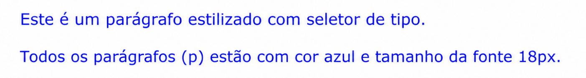
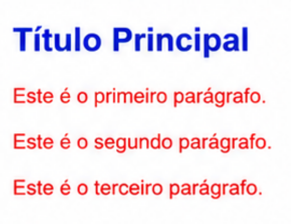
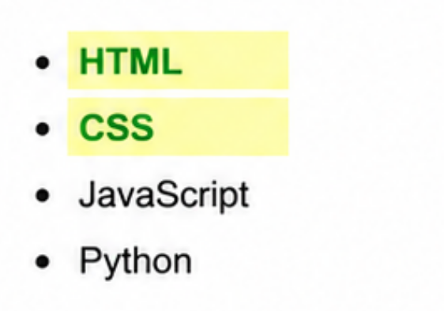
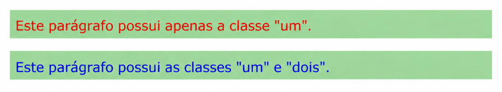
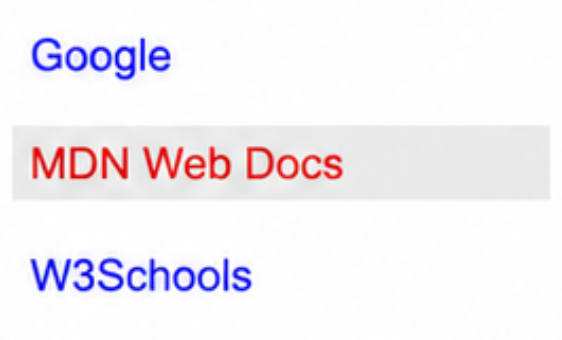
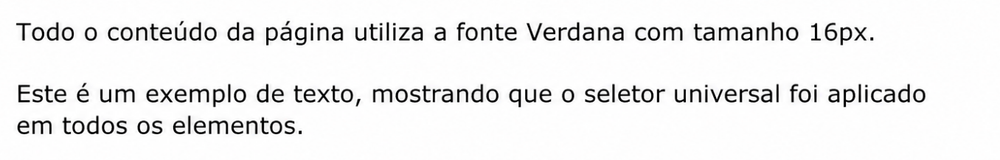

Exercícios de CSS - Cascading, Seletores e Propriedades
Exercício 1 - Estilizando Parágrafos com Seletor de Tipo
Utilize seletor de tipo para estilizar todos os parágrafos (p) com cor azul e tamanho da fonte 18px.
Resultado Esperado:

Exercício 2 - Combinando Seletor de ID e Classe
Utilize o seletor de ID para deixar o título com cor azul e tamanho de 28px. Além disso, use o seletor de classe para deixar os parágrafos com cor vermelha e tamanho 18px.
Resultado Esperado:

Exercício 3 - Classe Destaque com Contraste
Use a classe "destaque" e deixe os elementos que a possuírem com a cor verde e fundo amarelo.
Resultado Esperado:

Exercício 4 - Prioridade entre Classes no Mesmo Elemento
Declare dois parágrafos, atribua a classe "um" em ambos, mas apenas no segundo atribua também a classe "dois". Para a classe "um", atribua a cor vermelha e fundo verde. Para a classe "dois", atribua a cor azul, que deve ser visível.
Resultado Esperado:

Exercício 5 - Estilizando Link por Atributo
Deixe o link que possuir o atributo target="_blank" com fundo cinza e cor branca.
Resultado Esperado:

Exercício 6 - Título Centralizado com Seletor de ID
Utilize seletor de ID para estilizar um título com cor vermelha e alinhamento central.
Resultado Esperado:
Exercício 7 - Fonte Global com Seletor Universal
Utilize o seletor universal para definir a fonte padrão como "Verdana" com tamanho da fonte 16px.
Resultado Esperado:
